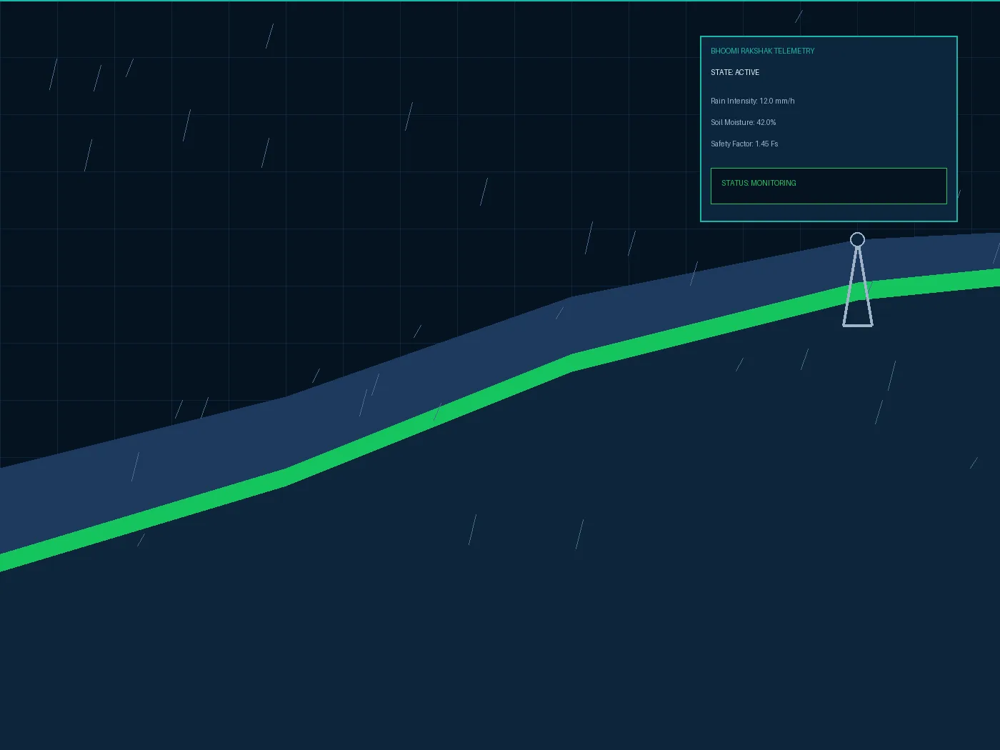
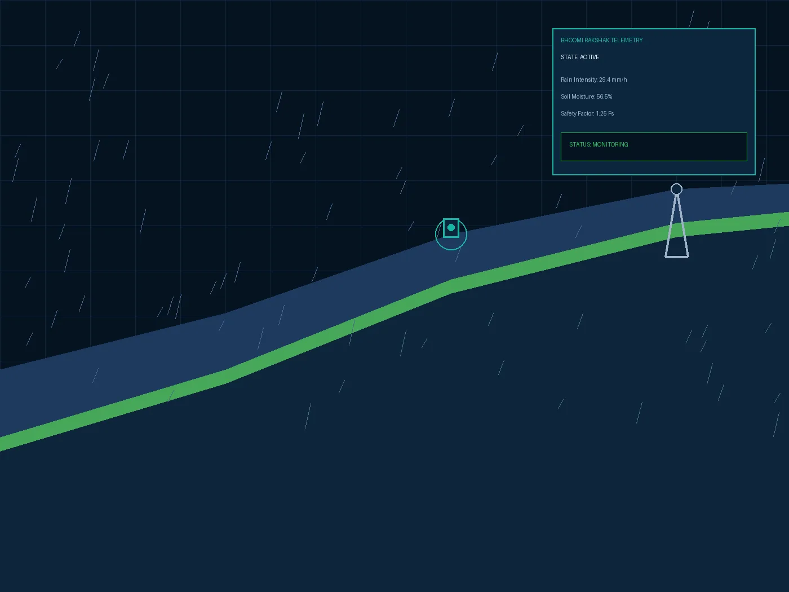
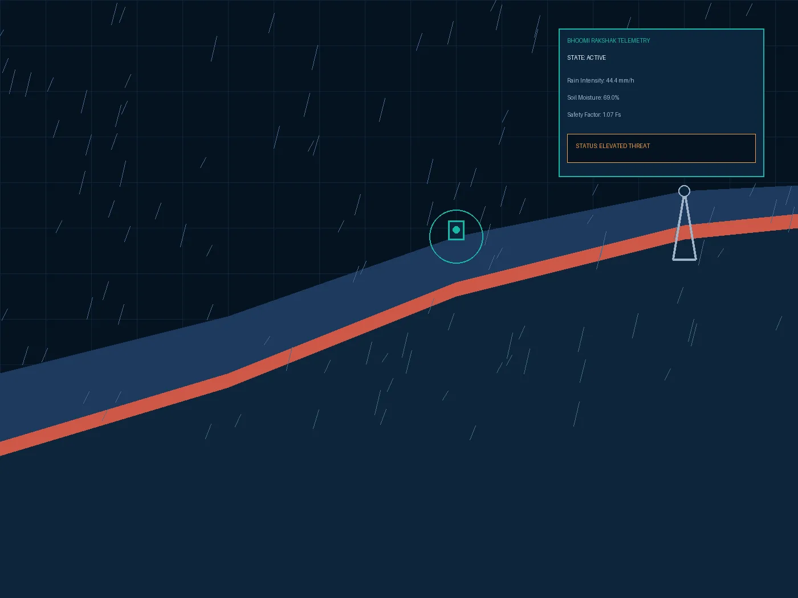
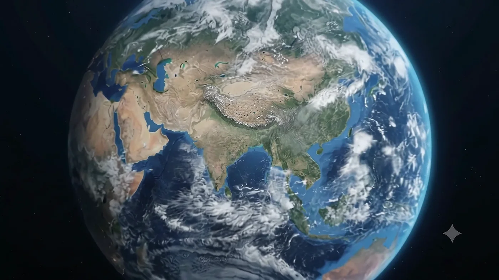
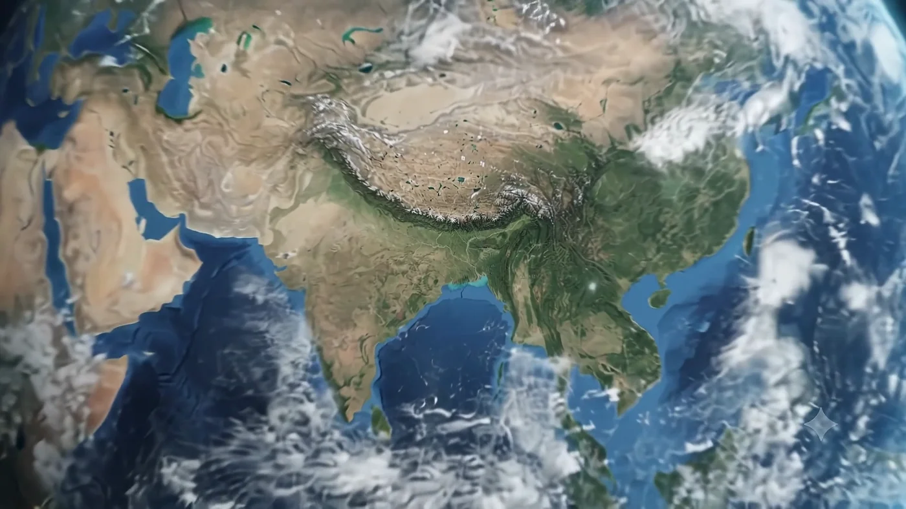

Bhoomi Rakshak
AI-powered 72-hour landslide prediction and early-warning system.
Early Signals. Safer Hills.
Monitoring local precipitation levels, soil saturation, and geophone micro-vibrations in real-time.
Analyzing clay friction parameters and geological safety factors under heavy monsoonal rain.
Gradient Boosting Classifiers predict geotechnical structural failures up to 72 hours in advance.
Triggering solar-powered sirens and geofenced warnings to shield vulnerable mountain populations.
Bhoomi Rakshak
Origin
Catastrophic landslides trigger devastation across India's North-Eastern and Himalayan regions every monsoon. Isolated villages are cut off from rescue, costing lives in the latency of reactive search-and-rescue.
Bhoomi Rakshak was built to turn this reactive window into a proactive shield: translating raw geotechnical slope moisture, angle, and vibration metrics into automated early warning signals.

Geotechnical Craft — 01
Localized sensor arrays are securely anchored deep into vulnerable clay and soil slopes. The nodes measure precipitation intensity, soil moisture %, clay depth profiles, and geophone vibrations.
Telemetry syncs securely with cloud endpoints every 3 hours, powering predictive models with zero local grid reliance.

Geotechnical Craft — 02
A Gradient Boosting Decision Tree (GBDT) model, trained on 50,000 historical slope failure logs, evaluates the 14 terrain parameters concurrently.
The system maps safety factors, alerts responders when displacement and saturation exceed geomechanical limits, and predicts landslide triggers with 94.2% model accuracy.

Technical Specifications
| Telemetry Sync Latency | Every 3 Hours (Live API) |
| Geophone Vibration Accuracy | ±0.01 mm/s |
| Model Architecture | Gradient Boosted Decision Tree (GBDT) |
| Emergency Siren Broadcast | Web Audio API Native / Solar Sirens |
| Regional Viewport Zoom | D3 GeoOrthographic Projection Map |
"Bhoomi Rakshak represents a major leap in climate-tech disaster prevention. By linking live geotechnical telemetry with machine learning, we turn reactive emergency response into proactive, life-saving warnings."Smart India Hackathon Climate-Tech Labs


Interact with the live early warning ML model and test weather scenarios in our prediction sandbox.
Launch Simulation Sandbox